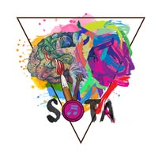
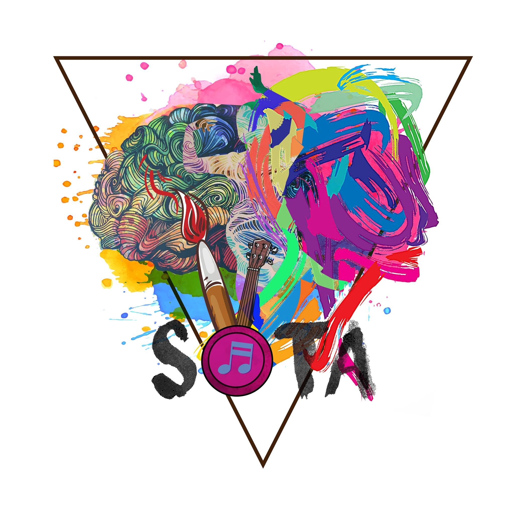

Company: Devs Core
Role: UI Designer
Responsibilities:
In this role, I practiced improving design consistency and building interfaces that look professional, clean, and easy to use. I also learned how UI decisions affect user experience.

Designing Head — SOTACompany: SOTA
Role: Designing Head
Responsibilities:
As a designing head, I managed design tasks and worked to keep visuals consistent. This improved my leadership, communication, and design planning skills.

General Secretary — State of the ArtOrganization: State of the Art
Role: General Secretary
Responsibilities:
This role improved my organizational skills and teamwork. I learned how to handle responsibilities, coordinate with people, and keep tasks structured and on time.